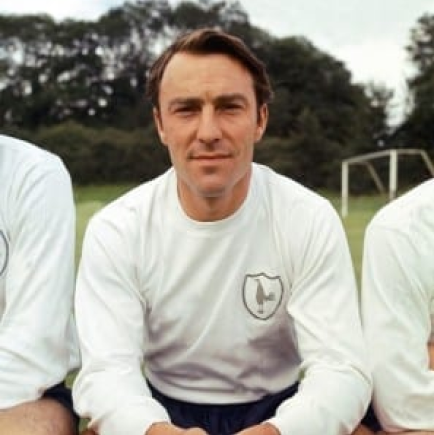
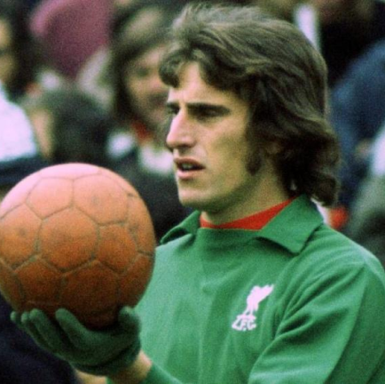
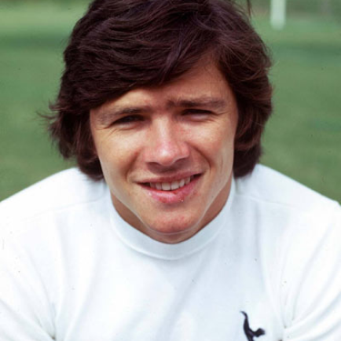
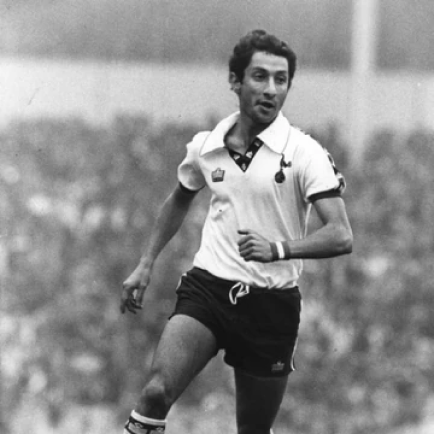

Tottenham Hotspur
A primeira conquista relevante da história do Tottenham fora alcançada na temporada 1900-01, quando o clube bateu o Sheffield United por 2 a 2 e 3 a 1 pela final da Copa da Inglaterra. Duas décadas mais tarde, os Spurs voltam a conquistar a taça do torneio mais antigo de futebol do mundo, desta vez com vitória de 1 a 0 sobre o Wolverhampton. Na temporada 1950-51, o clube ganha pela primeira vez o Campeonato Inglês. Na década de 60, os Spurs viveram grande fase. Em 1960-61 e 1961-62 sagraram-se bicampeões da Copa da Inglaterra, superando em sequência o Leicester por 2 a 0 e o Burnley por 3 a 1. Também na temporada 1960-61, o clube ganha o Campeonato Inglês pela segunda vez. Já em 1963, o Tottenham se sagrou campeão europeu ao conquistar a extinta Recopa Europeia. Em 1966-67 supera por 2 a 1 o Chelsea na decisão da Copa da Inglaterra, chegando ao seu quinto título neste torneio. Nos anos 70 e 80 o Tottenham também vive bons momentos, conquistando mais duas taças europeias da Copa da UEFA, atual UEFA Europa League em 1971-72 e 1983-84. Além disso, também venceu duas vezes a Copa da Inglaterra nas temporadas 1980-81 e 1981-82 e também duas taças da Copa da Liga Inglesa em 1970-71 e 1972-73. Na temporada 1990-91, os spurs alcançaram seu 8° título da FA Cup. Após um longo jejum, o clube bateu o Chelsea na final da Copa da Liga inglesa em 2007-08 e voltou a erguer um troféu.
Títulos
Liga europa: 2
Campeonato Inglês: 2
Supercopa da Inglaterra: 7

Ídolos
- 
- 
- 
- 
Jimmy Greaves
Por último, mas com certeza não menos importante, o maior artilheiro e um dos grandes ídolos da história do Tottenham, Jimmy Greaves. Atacante, ele jogou com a camisa de número 8 dos Spurs em um total de 379 partidas e marcou incríveis 266 gols. Passou nove anos no clube, de 1961 até 1970, sendo artilheiro em absolutamente todos eles. Venceu duas vezes a Copa e a Supercopa da Inglaterra e levou o Tottenham ao título da Recopa Europeia. A conquista foi a primeira de um primeiro time britânico no cenário internacional. Greaves tanto jogou ao lado de outras estrelas da época, a exemplo de Cliff Jones e Bobby Smith, como também carregou o protagonismo pelo clube de forma independente, sendo a referência técnica quando os Spurs perderam nomes importantes.
Ray Clemence
Penúltimo da lista, segundo defensor e único goleiro, Ray Clemence esteve nos Spurs durante sete anos, entre 1981 e 1988. Venceu uma Copa e uma Supercopa da Inglaterra, além de uma Copa da Uefa, num total de 240 partidas jogadas. Durante seu tempo defendendo o clube, Clemence, que chegou no Tottenham após ter passado anos no Liverpool sendo protagonista, foi o responsável por melhorar uma defesa que havia tomado 68 gols em 42 jogos da liga na temporada anterior. Haviam dúvidas se ele ainda poderia desempenhar em alto nível, mas os números e títulos provaram o contrário.
Steve Perryman
Perryman passou 17 anos no Tottenham, clube no qual foi campeão, se tornou um dos grandes ídolos e estabeleceu diversos recordes. Foram incríveis 854 jogos, 39 gols marcados e seis títulos conquistados – entre eles, duas Copas da Inglaterra e duas Copas da Uefa. Foi eleito em 1982 como o futebolista do ano, capitaneou os Spurs por 11 anos e ainda detém, até os dias de hoje, o recorde de ser o jogador com o maior número de jogos pelo clube.
Osvaldo Ardiles
Baixinho e habilidoso, Osvaldo Ardiles – ou Ossie Ardiles, como foi apelidado pela torcida -, chegou ao White Hart Lane em 1978, logo após ter sido campeão do mundo com a Argentina naquele ano. Para que o argentino se adaptasse sem maiores dificuldades, o clube também trouxe Ricardo Villa, seu compatriota, o que já mostrava a importância dada desde a sua chegada. Pelos Spurs, jogou durante 10 anos – ainda que com empréstimos durante o percurso – e foi campeão de duas Copas da Inglaterra e uma Copa da Uefa – atualmente Europa League. Dentre os fatos marcantes que o transformaram em ídolo do Tottenham está a semifinal da Copa da Inglaterra, em 1982, jogo que aconteceu um dia depois da Guerra das Maldivas. O confronto, que havia acontecido entre ingleses e argentinos, respingou no jogador, que foi vaiado durante toda a partida.
Tottenham Hotspur Stadium
O estádio era o White Hart Lane, e foi fundado em 1889. Com esforços de modernização teve sua capacidade reduzida para 36.230 espectadores. O recorde de público foi contra o Sunderland, em 5 de março de 1938, quando estiveram 76.000 torcedores. Em 3 de Abril de 2019, aconteceu a inauguração do estádio, o Tottenham Hotspur Stadium, com capacidade de 63.000 pessoas.